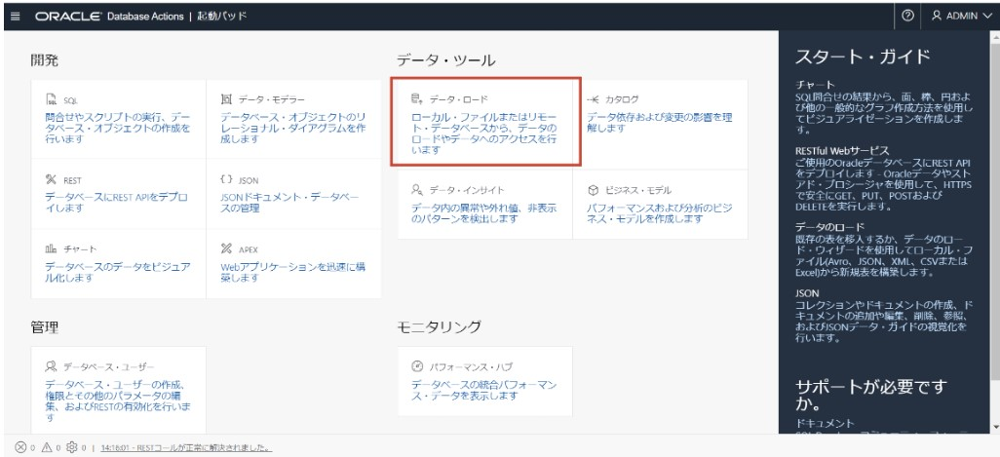
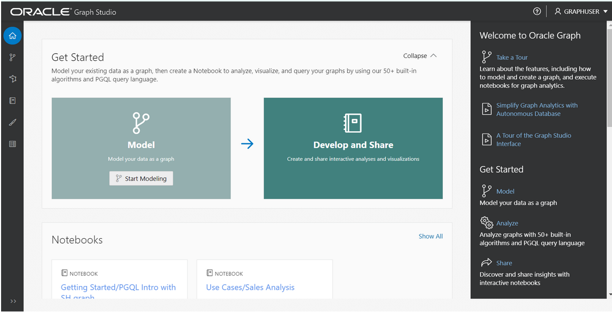
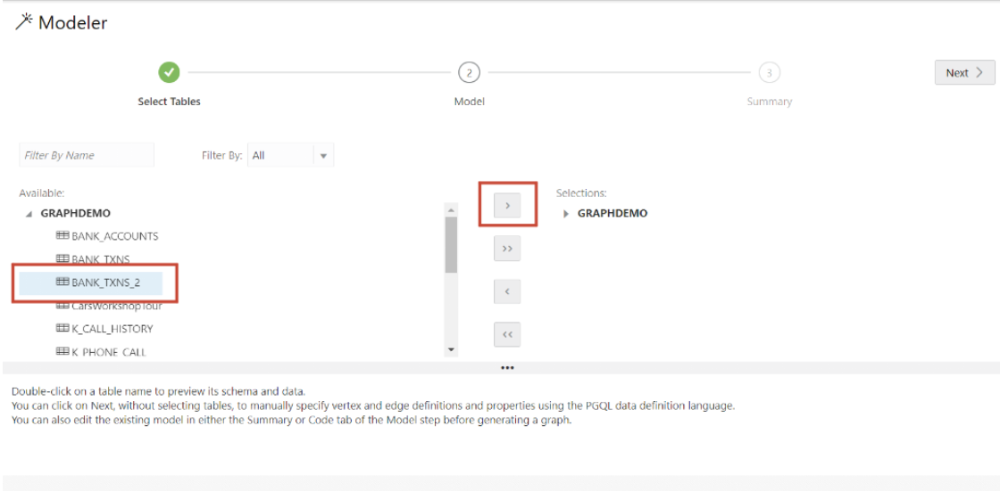
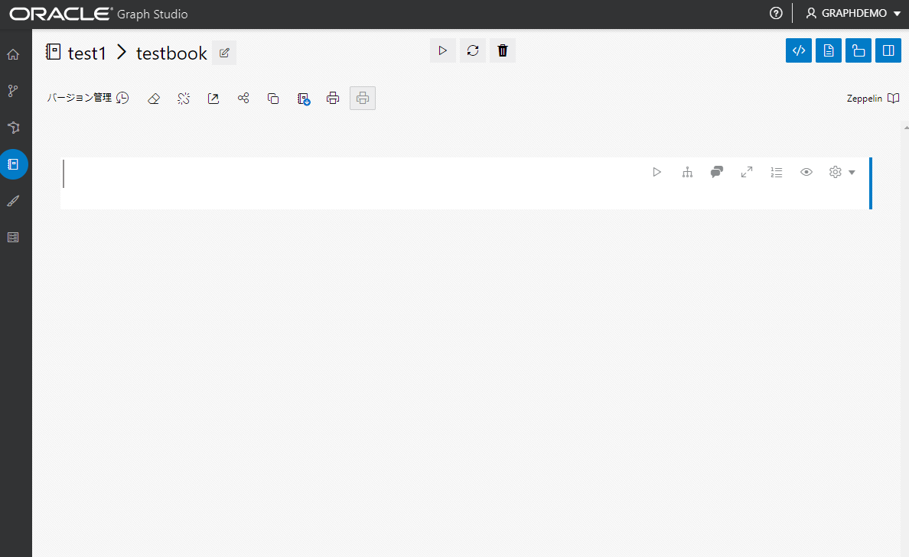

はじめに
この記事は“Graph Studio: Finding Circular Payment Chains using Graph Queries Workshop” の記事と補足事項を日本語で解説した内容になります。
Graph Studioとは
Autonomous Databaseには、2021年の5月ごろより、プロパティグラフを取り扱うことのできるGraph Studioが標準機能として搭載されました。
Graph Studioでは下記のような機能を利用可能です。
- データベースに存在するグラフをメモリに読み込んで分析
- リレーショナル表からグラフのモデルを作成するための自動変換
- SQLのようにクエリができるPGQLでの分析アルゴリズム
- グラフの可視化機能
上記のような機能がGraph Studioには搭載されているため、簡単にクラウドのUI上で完結する形でプロパティグラフの作成や分析が可能になっています。
この記事で確認できること
- CSVファイルのデータをAutonomous Databaseにアップロードする方法(SQL Developer Web (Database Actions SQL))
- Graph Studioへの接続方法
- PGQLクエリ(グラフクエリ言語)を用いたグラフ作成方法
- Graph Studioの分析用ノートブックの作成方法
- PGQLクエリを使ってノートブック上でグラフをクエリ&可視化方法
具体的な題材として、今回は金融トランザクションから、循環的な資金の流れを見つける分析を行います。
リレーショナル表からプロパティグラフへのデータの変換では、変換をほぼ自動で行ってくれる Graph Studio の機能を活用します。
目次 :
- 1.Graph Studio用のユーザーを作成
- 2.データの準備(取込み)
- 3.データの準備(整形)
- 4.Graph Studioにてリレーショナル表からグラフを作成
- 5.Graph Studioにて作成したグラフのクエリ
- 6.ノートブック上のクエリ
前提条件 :
- Oracle Cloudのアカウント
- プロビジョニングしたAutonomous Database
上記環境が必要になります。
Always Freeの範囲内でも十分に確認できる題材となっているので、気軽にお試しください。
所要時間 : 約30分
1. Graph Studio用のユーザーを作成
-
OCIコンソール上でAutonomous Databaseのインスタンス詳細画面を開く

-
ツールタブに移動して、データベースアクションを開く

-
ADMINユーザーでデータベースアクションにログイン

-
管理より、データベースユーザー作成画面へ移動

-
ユーザーの作成ボタンをクリック

-
グラフ用のユーザを作成
ユーザー名とパスワードを任意の文字で設定して、グラフとWebアクセスのオプションを有効化します。表領域の割り当てはデフォルトよりも多く割り当てておくと、後々のグラフ作成時に便利ですが、デフォルトのままでも今回の内容では問題ありません。 ユーザーの作成を押して、操作を完了させます。

これでGraph Studioが利用可能になりました。 後程Graph Studioにログインするので、設定したユーザー名とパスワードをメモしておきましょう。
2. データの準備(取込み)
サンプルデータをダウンロード後は、データベースアクションの画面から、csvファイルをデータベースに取り込んでいきます。
-
必要データのダウンロード
今回利用するワークショップ用のデータをダウンロードしていきます。 下記URLをブラウザに入力してダウンロードする場合 https://objectstorage.us-ashburn-1.oraclecloud.com/p/EmjceN7dh4exJAwe8llQzAOMi4Y4pe9deZbpOXDpcjmoXYQ98Xu7XVFinPudEQwM/n/c4u04/b/data-management-library-files/o/random-acct-txn-data.zip
wegetやcurlを使う場合
curl -G -o acct-txn-data.zip https://objectstorage.us-ashburn-1.oraclecloud.com/p/EmjceN7dh4exJAwe8llQzAOMi4Y4pe9deZbpOXDpcjmoXYQ98Xu7XVFinPudEQwM/n/c4u04/b/data-management-library-files/o/random-acct-txn-data.zipダウンロードができたら、unzipしておきましょう。unzipすると下記のようなデータが確認可能となっており、mac OS用のデータも入っています。

これで、今回使用するデータのダウンロードが完了しました。
入手したcsvファイルをデータベースアクション画面からデータベースへとロードしていきます。
-
データベースアクションのトップから、データロードの機能を選択 
-
データのロード、ローカルファイルからのアップロードを確認し、次へ
データ処理の方法はデフォルトで、データのロードが選択されており、データの場所もデフォルトでローカルファイルからのアップロードが選択されているので、そのまま次へを押します。

-
ファイルのアップロード ファイルの選択画面になるので、今回使用する二つのcsvデータを選択します。
今回は以下の二つのファイルを同時にアップロードします。
- account.csv
- the banktxns.csv


-
選択ができたら、緑色の開始ボタンを押して、データロードを実行

-
データが正常にロードされたことが確認後、右下の完了ボタンを押しデータのロードを終了

3. データの準備(整形)
csvのデータをデータベースにアップロードすることが完了したので、次はそのデータに対して主キーや外部参照制約などを追加していきます。この操作もデータベースアクション上で実行可能です。
-
SQL問い合わせ画面を開く

-
fixup.sqlファイルの内容を実行
ダウンロードしたcsvファイルと共に、fixup.sqlというファイルが入っているので、そちらをSQLワークシート画面にアップロードするか、下記のクエリを実行してください。
alter table bank_accounts add primary key (acct_id); alter table bank_txns add txn_id number; update bank_txns set txn_id = rownum; commit; alter table bank_txns add primary key (txn_id); alter table bank_txns modify from_acct_id references bank_accounts (acct_id); alter table bank_txns modify to_acct_id references bank_accounts (acct_id); desc bank_txns; select * from USER_CONS_COLUMNS where table_name in ('BANK_ACCOUNTS', 'BANK_TXNS'); -
実行結果の確認
下記のような実行結果になっていればクエリは成功しています。

-
CSVから取り込んだデータを確認
今回の記事で取り込んだ二つのテーブルの内容を確認します。 BANK_ACCOUNTSテーブルは アカウントIDと名前を持っています もう一つのTXNSテーブルはカラムとして、fromとtoという送金者と受け取りの人の口座IDを示す列になっています。

これらの二つのリレーショナル表から、次のステップではGraph Studioにてグラフを作成していきます。
4. Graph Studioにてリレーショナル表からグラフを作成
-
Graph Studioへログイン
Autonomous Databaseの詳細から、ツールタブを開き、Graph Studioを開きます。

-
Graph Studioへのサインイン
ADMINではGraph Studioには入れないので、作成したGraph用のユーザーでサインインをしましょう。

-
メニュー画面の表示
メニューは左側のアイコンで、それぞれの機能へ移動ができます。上から順に説明すると、下記のようなアイコンの機能になっています。
- ホームアイコン:ログイン後に見れるトップページに移動
- モデルアイコン:グラフのモデリング用ページに移動
- グラフアイコン:すでに存在するグラフが確認できます。ここからモデリングやPGQLのクエリも可能です。
- ノートブックアイコン:グラフの分析機能を利用可能なノートブック作成ページに移動
- ジョブアイコン:バックグラウンドで動いているジョブの確認ページに移動 
-
モデリングの機能でリレーショナル表からグラフを作成
左メニューの、上から2つ目のModelsアイコンをクリックして、モデリングをスタートします。

-
リレーショナル表一覧の確認
モデリングのページに移動すると、参照可能なデータベース上のリレーショナル表一覧が確認できます。
今回のデータでは、ANK_ACCOUNTS と BANK_TXNS の表を使用するので選択して、真ん中の→アイコンを押して、右側の選択画面にデータを移動します。準備ができたら、Nextボタンを押して、次へ進みます。 
-
選択した表のグラフへのマッピングを確認
画面上半分の左側には元のリレーショナル表、右側にはマッピング予定のグラフが確認できます。Vertexはグラフの頂点で、Edgeはグラフの辺を表します。

-
マッピングプレビューの確認
Previewボタンを押すと、表からグラフへのマッピング予定のデータ構造が確認できます。 今回のデータでは、ノードの種類もエッジの種類も1つのみなので、グラフのプレビューでは1つのノードとエッジのみが表示されます。あくまでも、これはマッピングのプレビューなので、実際のグラフは同じ種類同士のやり取りで口座同士が送金するため、完成形の見た目はマッピングのプレビューとは異なります。

-
マッピングのソースの確認
Sourceでは表形式をグラフ形式に変換するためのPGQL文を確認できます。このPGQLはDDLのようなものです。 bank_accounts表がノードとして変換され、bank transaction表がエッジとして変換されます。 マッピング自動で生成されているため、列の情報の中身までは見てくれません。ここではソースとしてto acount id,向かう先としてfrom account id がマッピングされておりますが、 実際の関係性はソースがform accountでデスティネーションは to account id なので入れ替えます。

下記のように入れ替えると、toとfromの関係性が正しくマッピングができます。

-
モデルの保存
プレビューやデザイナータブに移動しようとすると、この変更内容について保存するかどうか聞かれるので、Saveを押しましょう。(Nextを押してしまうと変更が保存されない場合があるので注意してください)

-
グラフの確認
PGQL文を確認後Nextボタンを押します。

-
作成予定のグラフの確認
Summaryで作成予定のグラフを確認したら、Crreate Graphを押して、グラフを作成します。

-
グラフ情報の入力
createボタンを押すと、グラフの情報の入力を求められるので、名前を入力して、作成します。

-
グラフの作成
createボタンを押した後は、画面が変更され、作成中のjobがご確認いただけます。 数分程度でグラフの作成は完了します。

最初に作成されたグラフ自体は、オラクルデータベースのテーブル上に保存されており、メモリに読み込むというオプションは、作成したグラフをメモリに読み込むことで、分析用のアルゴリズム等を実行することが可能になります。
5. Graph Studioにて作成したグラフのクエリ
作成したデータの更新方法は、トランザクション、分析と2種類の方法があり、Graph Studioの場合、トランザクションはクエリメニューで行い、アルゴリズム実行等の分析用途ではノートブックでのクエリになります。
-
クエリ画面の確認
クエリ画面でデータ操作を行うと、データベース内のグラフに対する変更操作であるため、データに対する変更は永続化されます。一部の分析用のグラフアルゴリズムはこの画面からは実行できません。 ノートブックへのクエリはクエリメニューからは使えない、グラフアルゴリズムが実行可能になっています。データ分析の用途がメインなため、データに対する変更は永続化されません。

-
データベースのクエリ
GraphツールのQueryというボタンから、下記のQuery Playgroundにて、データ更新のためのクエリが実行可能です。既存のグラフにデータを追加したり、新たなグラフを作成することが可能です。

-
クエリの実行
今回はシンプルなセレクト文をすでに作成したグラフに対して行います
select a0.acct_id AS a0, t1.amount AS t1, a1.acct_id AS a1 from match (a0)-[t1]->(a1) on bank_graph where a0.acct_id=934アカウントa0に対する直接的な口座取引がこれで確認できます。
今回はアカウントidが934のものを指定してクエリを実行しました。

-
次に口座取引が循環しているケースを探索 口座アカウントa0(934)を起点として、5ホップして、また起点であるa0に戻ってくるような経路を探索します。
select a0.acct_id AS a0, t1.amount AS t1 , a1.acct_id AS a1, t2.amount AS t2 , a2.acct_id AS a2, t3.amount AS t3 , a3.acct_id AS a3, t4.amount AS t4 , a4.acct_id AS a4, t5.amount AS t5 from match (a0)-[t1]->(a1)-[t2]->(a2)-[t3]->(a3)-[t4]->(a4)-[t5]->(a0) on bank_graph where a0.acct_id=934 and all_different(a0, a1, a2, a3, a4)結果が一覧で表示されました。

-
クエリから直接グラフを作成する
新たにグラフを作成したい場合、下記のようにグラフ構文であるPGQLを利用して、プロパティグラフを作成することができます。 一行目のクエリで空のグラフを作成し、その後にノードとエッジをINSERTしています。今回のグラフ名はmy_8th_graphとしていますが、お好みのグラフ名をご指定下さい。
この例では簡単に人物の情報をnodeとして、人物同士のつながりをエッジとして表しました。 この記事のデータとは無関係のデータなので、クエリ参考例としてご活用ください。
CREATE PROPERTY GRAPH my_8th_graph; INSERT INTO my_8th_graph VERTEX v LABELS ("PERSON") PROPERTIES (v.id = 'Aさん', v."AGE" = '15'); INSERT INTO my_8th_graph VERTEX v LABELS ("PERSON") PROPERTIES (v.id = 'Bさん'); INSERT INTO my_8th_graph VERTEX v LABELS ("PERSON") PROPERTIES (v.id = 'Cさん'); INSERT INTO my_8th_graph VERTEX v LABELS ("PERSON") PROPERTIES (v.id = 'Dさん'); INSERT INTO my_8th_graph VERTEX v LABELS ("PERSON") PROPERTIES (v.id = 'Eさん'); INSERT INTO my_8th_graph VERTEX v LABELS ("PERSON") PROPERTIES (v.id = 'Fさん'); INSERT INTO my_8th_graph EDGE e BETWEEN src AND dst LABELS ("親") PROPERTIES (e.direction = '->') FROM MATCH (src) ON my_8th_graph, MATCH (dst) ON my_8th_graph WHERE src.id = 'Aさん' AND dst.id = 'Bさん'; INSERT INTO my_8th_graph EDGE e BETWEEN src AND dst LABELS ("友人") PROPERTIES (e.direction = '->') FROM MATCH (src) ON my_8th_graph, MATCH (dst) ON my_8th_graph WHERE src.id = 'Bさん' AND dst.id = 'Cさん'; INSERT INTO my_8th_graph EDGE e BETWEEN src AND dst LABELS ("友人") PROPERTIES (e.direction = '->') FROM MATCH (src) ON my_8th_graph, MATCH (dst) ON my_8th_graph WHERE src.id = 'Cさん' AND dst.id = 'Bさん';
6. ノートブック上でのクエリ
先ほどはデータの選択や、作成、更新に使用できるQuery画面からのクエリを行いましたが、次は分析等に使えるノートブックを活用していきましょう。クエリ画面ではできなかったアルゴリズムが実行可能ですが、ノートブック上でのデータの変更は永続化されないため、ご留意ください。
-
ノートブック画面の作成
ノートブック画面へは左側のメニューバーから入ることができます。新たなノートブックを作成する場合、右上の作成ボタンを押しましょう。

-
必要項目の入力
作成ボタンクリック後には、ノートブックの作成に必要な名前の入力等が求められます。この画面で、フォルダを指定してノートブックを作成することも可能です。例えば、test1/testbookとノートブックの名前に入力すると、test1というフォルダの中にtestbookという名称のノートブックの作成が行われます。

-
コードの入力
新規ノートブックにコードを記入していきます。 言語はmarkdownやJShell,PGQLの利用が可能で、将来的にはPythonもサポート予定となっています。 
-
コードの実行
コードを記載後、三角形の実行ボタンを押すことでプログラムの結果が出力されます。 一旦全てのグラフをクエリしてみます。下記コードで指定したグラフ名のグラフ全てをクエリ可能です。
%pgql-pgx SELECT * FROM MATCH ()-[e]->() ON bank_graph -
ノードとエッジの表示
実行した後は、特にラベル等もついていないので、ノードとエッジのみが表示されます。

-
ビジュアライゼーションの変更
グラフの見た目の変更は下記ボタン部分から設定画面を開くことが可能です。

ビジュアライゼーションの変更を行う場合、は設定のラベリングから、ノードとエッジのラベルを指定します。


設定を完了すると、それぞれのノードとエッジに指定したラベルが表示されます。ビジュアライゼーションの設定はノートブックの段落ごとに行う必要があるため、段落のクローニングを行うと、設定が引き継がれたまま、別の段落でのクエリが可能になります。クローニングができたら、別のコードを上書きして実行をします。

-
クエリの実行
それではここでも、ID934の口座に対して、５ホップでまたa0に戻ってくるようなパターンのものをクエリしてみましょう。先ほどのデータベースへのクエリ画面で行った場合、結果は一覧で表示されましたが、ノートブックはクエリ結果としてグラフ状の表示が可能となっております。
%pgql-pgx select * from match (a0)-[t1]->(a1)-[t2]->(a2)-[t3]->(a3)-[t4]->(a4)-[t5]->(a0) on bank_graph where a0.acct_id=934 and all_different(a0, a1, a2, a3, a4)
ノートブック上では、グラフアルゴリズムを活用することが可能になっており、ノード間での最短経路を求めることも可能です。これを用いて、直接やりとりの無い口座間において、仲介をしている可能性のある口座を探すことができます。
今回は口座番号934と66の間の取引の最短経路を求めました。この二つの口座間では直接の口座取引はありませんが、間接的な経路が存在する可能性を調査する目的でこのクエリを行っています。
%pgql-pgx SELECT ARRAY_AGG(a.acct_id) AS list_of_accounts , ARRAY_AGG(ID(t)) AS list_of_transactions , MIN(t.amount) AS min_amount_on_path FROM MATCH TOP 5 SHORTEST ((a1) (-[t]->(a))* (a2)) on bank_graph WHERE a1.acct_id = 934 AND a2.acct_id = 66 ORDER BY MIN(t.amount) DESC
結果を確認すると、直接指定した934と66にやり取りはありませんが、別の口座とのやり取りをたどることで、二つの口座にはつながりがあることが分かり、口座番号934と66の間の取引の最短経路が分かりました。
上記クエリの結果で表示された経路を下記のようにクエリいただくと、経路を確認することが可能です。
%pgql-pgx SELECT * FROM MATCH (a1)-[t]->(a2) on bank_graph WHERE ID(t) IN (1762,845)
まとめ
今回の記事を実践いただき、Graph Studioの利用の始め方から簡単なクエリの方法までご理解いただけたかと思います。 グラフのアルゴリズムを活用することで、今までのリレーショナル表では分析が大変だったようなつながりも簡単にクエリが可能になっています。
今回の例は口座の取引について分析しましたが、サプライチェーン分析や人物関係等、他にもグラフを活用できる場面は多くあります。この記事の手順をご理解いただければ、すでに皆さんのリレーショナル表にある他のデータもグラフで分析することも可能になっているので、ぜひご活用ください。